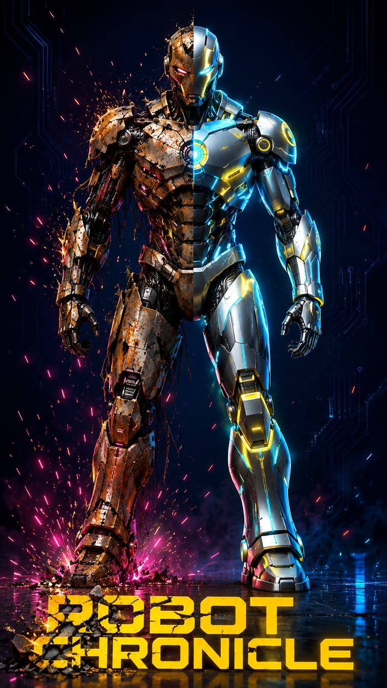

🤖
ROBOT CHRONICLE
De tas de ferraille à légende.

v0.12.5
Démarrage…
ROBOT
CHRONICLE
De tas de ferraille à légende
Commencer une carrière
🔄 Abandonner et recommencer
🏆 Trophées
0/50
🏅 Puces
0/20
🏛️ Hall of Fame
⚙️ Atelier
⚡ Défi du jour
🛡️ Tank
🧬 Adaptive
🏢 Corp moyenne
Bientôt disponible
Bientôt disponible
📋 Quêtes du jour
0/3
En voir plus
📖 Mode histoire
🛡️ TITAN-01 · Le Premier Champion
Bientôt disponible
EXTRACTION
0%
Toucher pour passer
← Menu
📊 Classement
Annuler
Confirmer